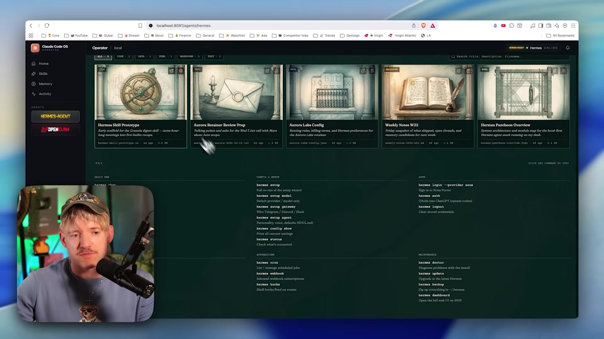

🗣️ O vocabulario: LLM, agente e SO de IA
Antes de instalar qualquer coisa, vale acertar as palavras. Tres termos vao aparecer o curso inteiro: LLM (o cerebro), agente (o cerebro com maos) e SO de IA (o lar onde tudo isso mora — o Hermes). Este modulo define cada um do zero, sem pressupor nada.
🤖 O que e um LLM
Quando voce digita no ChatGPT, atras da janela de chat ha um programa que escreve a resposta. Esse programa e o LLM. O chat e so a roupa: a inteligencia que pensa as palavras e o LLM. Trocar de chat (ChatGPT, Hermes, o terminal do Ollama) nao troca o cerebro — voce pode ligar o MESMO LLM a varias "roupas".
Novo aqui? LLM e a sigla de "Large Language Model" — modelo de linguagem grande. "Grande" porque foi treinado lendo uma quantidade enorme de texto; "de linguagem" porque o que ele faz e lidar com palavras. Pense no LLM como o cerebro de IA, separado da telinha onde voce conversa com ele.
Por dentro, o LLM nao "entende" como nos. Ele faz uma coisa so, muito bem: preve o proximo pedaco de texto. Dada a frase ate aqui, ele calcula qual e a continuacao mais provavel, escreve esse pedaco, e repete. Escrevendo um pedacinho de cada vez, sai um texto inteiro que parece raciocinio.
Repare: o LLM nao "sabe" a resposta de antemao — ele pesa varios candidatos e escolhe o mais provavel a cada passo. Por isso a mesma pergunta pode gerar redacoes ligeiramente diferentes.
Conceitos-chave
O cerebro de IA — modelo de linguagem grande, separado do chat.
O pedacinho de texto que ele preve por vez (detalhe no 1.4).
A unica coisa que ele faz: o proximo pedaco mais provavel.
O mesmo LLM pode estar atras de varias telas diferentes.
🛠️ O que e um agente
Um LLM sozinho so escreve texto. Ele nao consegue abrir um arquivo, buscar na web ou rodar um comando — ele apenas fala sobre fazer isso. Um agente e o que muda o jogo: e o LLM com maos. A formula e simples: agente = LLM + ferramentas.
Novo aqui? Uma ferramenta (em ingles, "tool") e uma acao que o LLM pode disparar no mundo real: ler/escrever um arquivo, fazer uma busca, rodar um pedaco de codigo. O agente le seu pedido, decide QUAL ferramenta usar, usa, le o resultado e segue. E essa alca de "pensar → agir → observar" que separa um chat de um agente.
✓ O que um AGENTE faz
- ✓Busca informacao atualizada na web.
- ✓Le e edita arquivos no seu computador.
- ✓Roda codigo e olha o resultado pra se corrigir.
- ✓Encadeia varios passos sozinho ate a tarefa ficar pronta.
✗ O que um LLM "pelado" NAO faz
- ✗Acessar dados de hoje (so sabe o que viu no treino).
- ✗Mexer em arquivos — so descreve como faria.
- ✗Executar nada; ele para no texto.
- ✗Verificar o proprio trabalho rodando de verdade.
Guarde essa equacao: ao longo do curso, "agente" sempre quer dizer um LLM que ganhou ferramentas. O Hermes e exatamente isso — um agente — so que rodando com o seu modelo local no comando.
Conceitos-chave
LLM + ferramentas; pensa, age e observa.
Acao que o LLM pode disparar: buscar, rodar, editar.
Pensar → agir → observar, repetido ate concluir.
Encadeia varios passos sem pedir tudo a cada momento.
🖥️ O que e um "SO de IA"
Se o agente e o LLM com maos, o SO de IA e a casa onde ele mora. O Hermes se descreve assim: um sistema operacional para a sua IA. Em vez de uma janela de chat solta, ele junta num lugar so a memoria, as skills, as conexoes e os agentes — tudo gerenciado por voce.
Novo aqui? "SO" e "sistema operacional" — como o Windows ou o macOS, que organizam programas, arquivos e janelas num lugar so. Um SO de IA faz o mesmo papel, mas para a sua inteligencia: e onde a memoria, as habilidades e as conexoes da sua IA ficam guardadas e disponiveis, em vez de espalhadas em chats que somem.

🏠 Por que "casa" e nao "chat"
Num chat comum, cada conversa comeca do zero e se perde. Num SO de IA, a inteligencia tem endereco fixo: o que voce ensinou continua la, as conexoes ficam ligadas e os agentes podem rodar mesmo quando voce nao esta olhando.
- •Memoria: o que ele lembra de voce e do seu trabalho.
- •Skills: habilidades que voce instala/ativa.
- •Conexoes: fontes externas (GitHub, documentos).
- •Agentes: trabalhadores que executam tarefas.
Conceitos-chave
O "lar" que reune memoria, skills, conexoes e agentes.
O SO de IA deste curso, que dirige o seu modelo local.
A inteligencia nao recomeca do zero a cada chat.
Memoria, skills, conexoes e agentes — definidas a seguir.
🧠 Memoria, personas e skills
Tres pecas do SO merecem definicao propria, porque aparecem o curso inteiro. Cada uma resolve uma frustracao classica de quem so usou chat: esquecer tudo, falar sempre do mesmo jeito e nao saber fazer tarefas especificas.
Memoria
O que a IA lembra entre conversas: seus projetos, suas preferencias, fatos seus. Em vez de se reapresentar toda vez, voce parte de onde estava. E o oposto do chat que "esquece" a cada nova janela.
Persona
Um "jeito de ser" que voce define: o tom, o papel e as regras de como a IA responde (ex.: "revisor seco e direto" ou "professor paciente"). Voce pode ter varias e trocar conforme a tarefa.
Skill
Uma habilidade pronta que voce liga: um conjunto de instrucoes + ferramentas para uma tarefa especifica (resumir um PDF, organizar um repo). E como instalar um "app" dentro do seu SO de IA.
Novo aqui? Nao confunda os tres: memoria e o que ele LEMBRA; persona e COMO ele fala; skill e o que ele SABE FAZER. Os tres ficam guardados no SO e voce os configura na Trilha 3 (modulo 3.3).
Conceitos-chave
O que a IA lembra de voce entre conversas.
O tom e o papel com que a IA responde.
Habilidade instalavel para uma tarefa especifica.
Voce monta as tres com a sua cara (na Trilha 3).
🔌 Conexoes: ligar a IA ao seu mundo
Uma conexao e um cano que liga o agente a uma fonte sua de dados — um repositorio de codigo no GitHub, uma pasta de documentos, suas notas. Sem conexao, o agente so sabe o que esta no chat. Com conexao, ele pode ler o SEU contexto e trabalhar em cima dele.
Novo aqui? "GitHub" e um site onde programadores guardam e versionam codigo (um "repo" = um projeto). Mas conexao nao e so codigo: vale tambem para uma pasta de PDFs, planilhas ou anotacoes. A ideia geral e a mesma — dar ao agente acesso de leitura ao material com que VOCE trabalha.
Veja o agente no centro e os canos azuis chegando das suas fontes. Quanto mais conexoes, mais o agente trabalha sobre o SEU mundo — e nao sobre conhecimento generico.
📊 Por que isso importa para o local
Conexoes ficam ainda mais valiosas quando o agente roda local: voce liga dados sensiveis (codigo proprietario, documentos privados) SEM mandar nada pra nuvem. O cano existe, mas o trabalho acontece na sua maquina — assunto do proximo topico.
Conceitos-chave
Cano que liga o agente a uma fonte sua de dados.
Um projeto de codigo versionado; uma fonte comum.
O agente trabalha sobre o SEU material, nao o generico.
Local + conexao = usar dado privado sem vazar.
☁️ Local vs nuvem: onde cada peca roda
Ja temos o vocabulario. Falta uma pergunta que vai voltar o curso inteiro: onde o LLM roda? "Local" significa na SUA maquina; "nuvem" significa no servidor de uma empresa. O agente, a memoria e as conexoes podem usar um modelo local OU um da nuvem — e e voce quem escolhe.
🖥️ Modelo LOCAL
- ✓Roda na sua maquina; dados nao saem.
- ✓Gratuito apos baixar; funciona offline.
- ✓Limitado pelo seu hardware.
☁️ Modelo na NUVEM
- •Roda no servidor de uma empresa.
- •Costuma ser mais potente nas tarefas dificeis.
- •Cobra por uso e exige internet; dados trafegam.
Ponte para o 1.6: nao e "ou um ou outro" para sempre. O Hermes deixa voce alternar — privado por padrao, nuvem quando vale a pena. Isso vira os tres modos (Vault, Connected, Cloud) no modulo 1.6, e o Ollama (modulo 1.3) e quem faz o modelo local rodar.
Conceitos-chave
O modelo roda na sua maquina; dados ficam.
O modelo roda no servidor de uma empresa.
A pergunta e o LUGAR onde o LLM executa.
Alternar entre os dois e o tema do modulo 1.6.
Auto-checagem (opcional): qual frase define corretamente um "agente"?
🎯 Resumo do modulo
Proximo modulo:
1.3 — O que e o Ollama e os modelos abertos